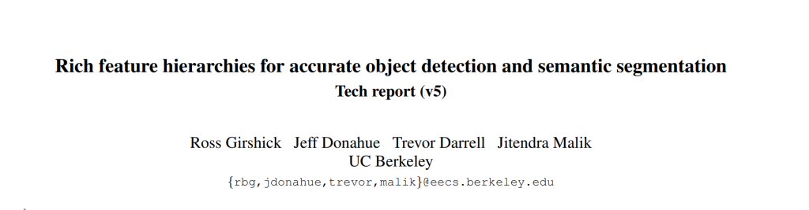
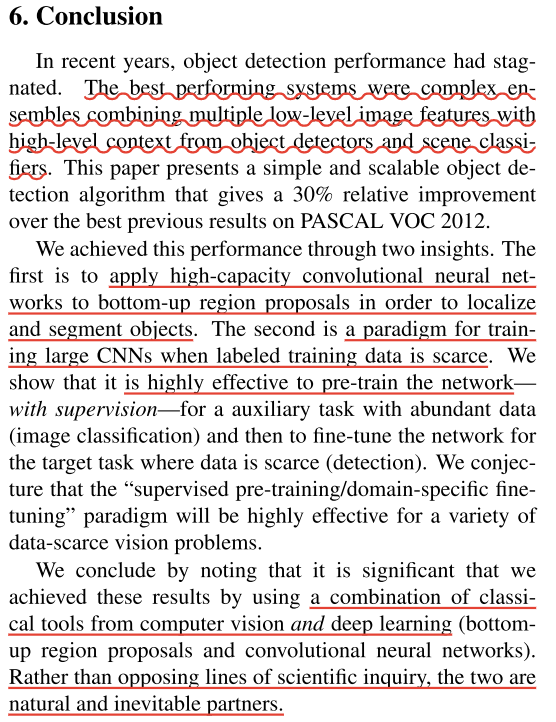
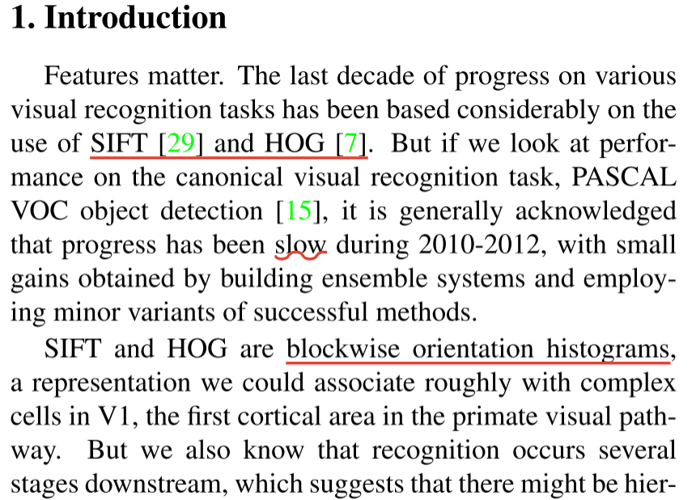
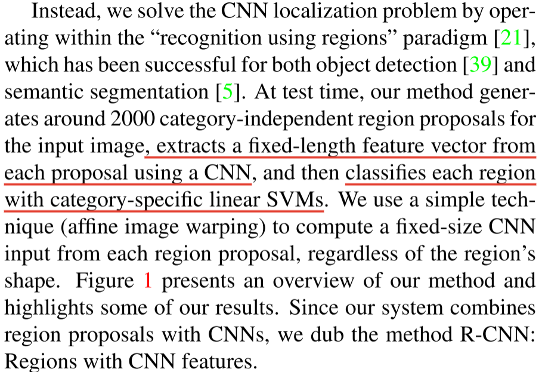
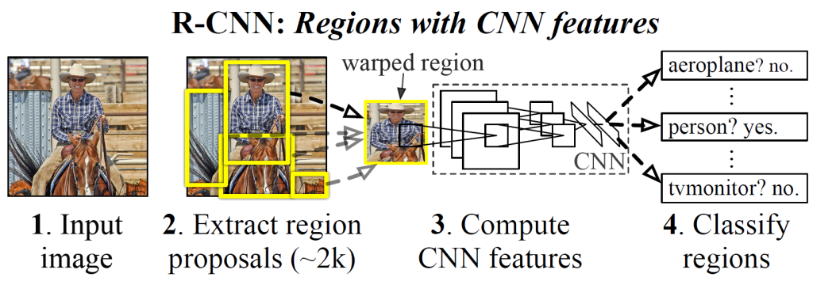
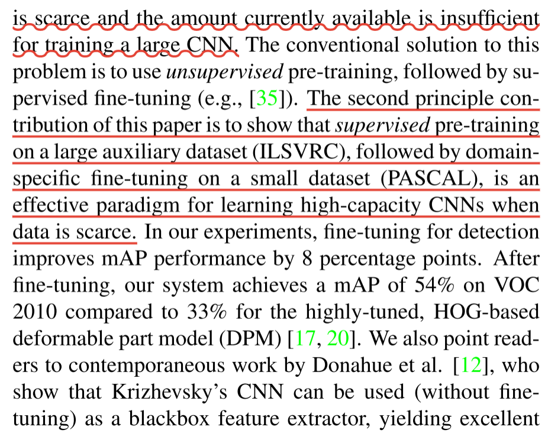
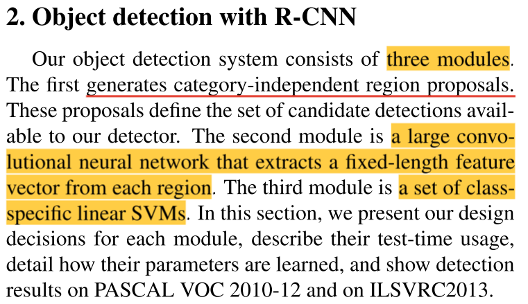
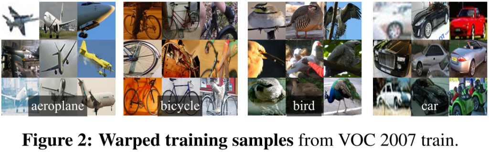
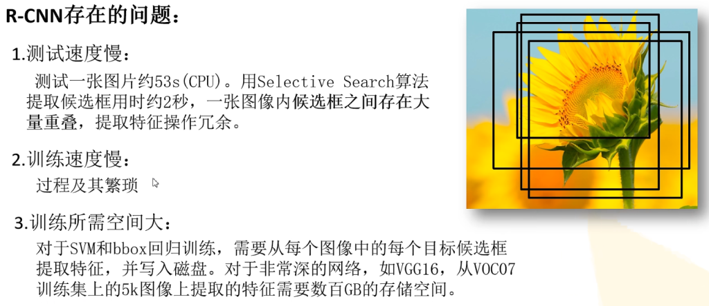

R-CNN——RCNN系列算法Ⅰ
前言
由于基于深度学习的方法较传统方法相比，准确率有了较明显的提升，故只学习基于深度学习方法的目标检测。
RCNN系列算法将从论文着手，结合其他资料，学习R-CNN、 Fast R-CNN、Faster R-CNN。
R-CNN的全称是Region-CNN，是第一个成功将深度学习应用到目标检测上的算法。R-CNN基于卷积神经网络(CNN)，线性回归，和支持向量机(SVM)等算法，实现目标检测技术。[ref] R-CNN_百度百科 (baidu.com)[/ref]
论文与源码
代码：rbgirshick/rcnn: R-CNN: Regions with Convolutional Neural Network Features (github.com)

摘要

摘要首先开门见山地指出与之前传统方法相比，R-CNN一下子将平均精度提高了30%（至53.3%），可见其有效性。
指出了本文的两个要点：① 高容量卷积神经网络自底向上，以便定位和分割对象；② 当标记的训练数据稀少时，用于辅助任务的监督预训练，接着是域特定的微调，产生显著的性能提升。
RCNN名字由来：Regions with CNN features。
结论

结论部分内容描述内容与摘要基本一致。在这里作者提到了“计算机视觉“和”深度学习”两种工具结合使用，这一方法在现在看起来应该是十分常见的了，但是在2014年，这一结论确实有着对应的时代意义。
介绍

在介绍部分，作者给出了本篇论文提出的时代背景：最近几年（2010年左右）在目标检测领域，传统算法达到了瓶颈。传统的特征提取方法如SIFT和HOG只能提取表层特征，而卷积神经网络可以提取到更多的信息。
正是在这几年，人们重新发现了深度学习方法在图像处理领域，尤其是在图像分类任务优异的表现，作者便想要弥合图像分类与目标检测之间的性能鸿沟。作者提出了两个待研究问题：用深度网络定位对象和用少量标注的检测数据训练高容量的模型。
定位问题
方法一：将定位问题描述为一个回归问题。Szegedy等人在实践中证明该方法性能不佳。
方法二：建立一个滑动窗口探测器。与CNNs思路一致。
存在问题：输入图像中具有非常大的感受野(195×195像素）和步幅(32×32像素），滑动窗口范式中的精确定位成为一个开放的技术挑战。

本文解决思路：“使用区域的识别”。使用CNN从每个建议中提取一个固定长度的特征向量，然后用特定类别的线性SVM对每个区域进行分类。使用一种简单的技术（仿射图像翘曲）来计算每个区域提案的固定大小的CNN输入，而不管区域的形状如何。 由于将区域建议与CNNS结合在一起，我们将该方法命名为R-CNN：具有CNN特征的区域。系统设计概述见下图。

带标记数据稀缺问题
- 常规解决方案：使用无监督的预训练，然后是有监督的微调。
- 本文提出方案：大辅助数据集上进行有监督的预训练(ILSVRC)，然后在小数据集上进行特定领域的微调(PASCAL)。

R-CNN目标检测算法细节

目标检测系统包含三个模块：① 生成与类别无关的区域建议；② 从每个区域获得固定长度特征向量的卷积神经网络；③ 一组特定类的SVM。
模型设计
区域提案
R-CNN选择selective search算法实现。
特征抽取
从每个区域抽取4096维特征，特征是通过将减去均值的227×227 RGB图像向前传播通过五个卷积层和两个完全连接层来计算的。
论文中提到，227×227是直接通过缩放变形实现的。

测试时间检测
论文使用SS算法提取了大约2000个区域建议。
图像的所有点积都被批处理成单个矩阵-矩阵积。特征矩阵通常为2000×4096，SVM权重矩阵为4096×N，其中N为类别数。
R-CNN可以扩展到数千个对象类，而不需要求助于近似技术。
训练
- 有监督的预训练
- 特定领域微调
- 对象类别分类器
存在问题
